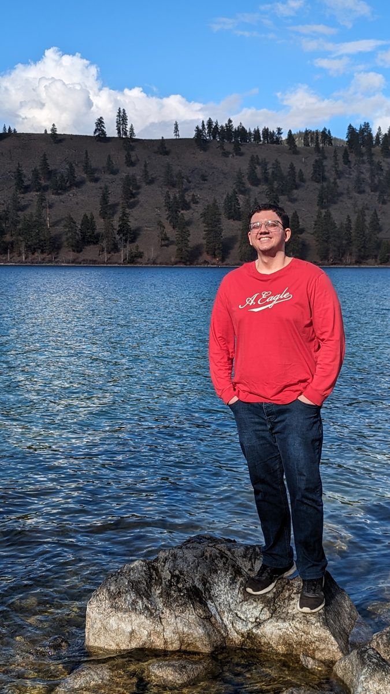
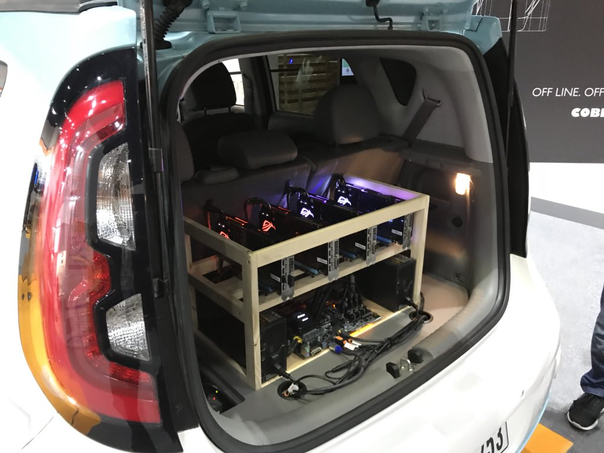
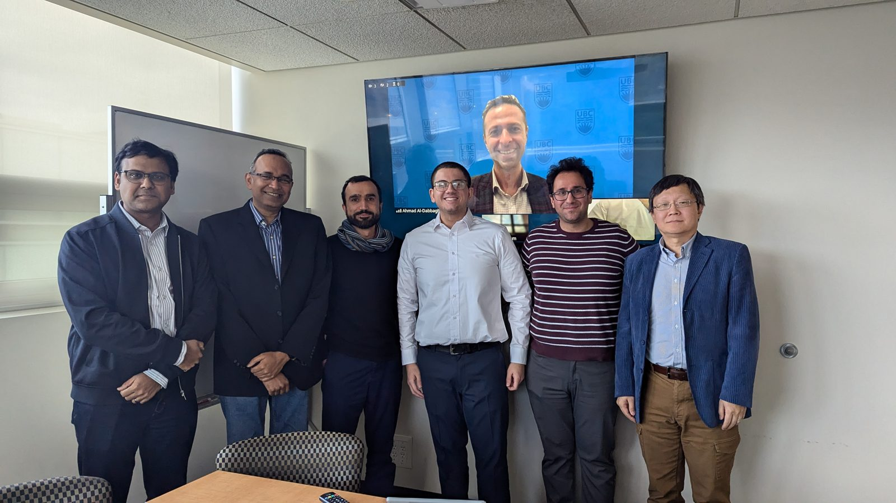

Adam Atoom
PhD Student in Electrical and Computer Engineering at Michigan State University
Reinforcement Learning & Autonomous Driving
East Lansing, MI, USA
adamatoom0@gmail.com | LinkedIn | GitHub

Work Experience
Jan. 2025 -- Present
Graduate Research Assistant
Michigan State University
- Reduced the sim-to-real gap in autonomous driving behavior cloning datasets through reinforcement learning.
- Increased speed of generation of long-tail driving scenarios using world models, Gaussian Splatting and NeRFs.
- Generated diverse long-tail driving scenarios using diffusion transformers and autoregressive methods.
- Engineered a distributed data collection and DDP training pipeline across university devices to handle massive datasets, scaling reinforcement learning for end-to-end self-driving in the CARLA simulator.
- Led the Spartan Autonomous Racing Club and developed its ROS2 and simulation systems.
Jan. 2023 -- Dec. 2024
Graduate Research Assistant
The University of British Columbia / Machinery Analytics
- Built vision language models to generate combustor state visualizations after applying sensor fusion.
- Instructed and graded for courses in Autonomous Vehicles, Machine Learning, and Communication Systems.
Sep. 2021 -- Dec. 2022
Machine Learning Engineer
Iotistic Solutions
- Engineered inference pipelines for retrofit Advanced Driver Assistance Systems (ADAS).
- Deployed ADAS models using ONNX and TensorFlow Lite to edge devices, serving over 100,000 users.
- Reduced inference latency by 75% by refactoring the codebase to offload AI inference to iGPUs on the x86 systems.

Jan. 2021 -- Sep. 2021
Computer Vision Engineer
JoVision
- Automated industrial tire inspection pipelines using image processing and OCR software.
Oct. 2018 -- May 2020
Engineering Intern
Sager Drones
- Integrated flight control and RF telemetry into UAVs using firmware written in C++.
Education
Jan. 2025 -- Present
PhD in Electrical and Computer Engineering
Michigan State University
Research focus: Reinforcement Learning in Self-Driving. GPA: 4.0
Jan. 2023 -- Nov. 2024
Master of Applied Science in Electrical Engineering
The University of British Columbia
Research focus: Computer Vision. GPA: 4.0

Sep. 2017 -- Jan. 2021
Bachelor of Science in Engineering
The University of Jordan
Research focus: Autonomous Ground Robotics. GPA: 3.89 / Ranked 1st
Publications and Projects
Minimizing the Sim-to-Real Gap in End-to-End Self-Driving (Targeting WACV 2027)
Reduced the sim-to-real gap in end-to-end self-driving via PPO-trained transformer policies over BEV representations, improving the driving score in CARLA by 13.8% in closed-loop evaluation.
Fine-Grained Control for Neural Simulation in Autonomous Driving (Targeting CVPR 2027)
Built fine-grained controls in neural simulation to post-train driving policies, pretrained with imitation learning, using supervised fine-tuning and LoRA adapters.
Retrofitting my personal KIA Soul Vehicle with ADAS - Video
Built a CAN-bus control module for low-level vehicle control. Implemented and deployed real-time end-to-end lateral and longitudinal control on the NVIDIA Jetson Xavier NX.

Skills
- Languages: Python, C++, SQL, MATLAB, LaTeX
- Frameworks/Tools: PyTorch, ROS2, Linux, Git, Docker
- Technologies: Deep Learning, Reinforcement Learning, Imitation Learning, Robotics, SLAM, Computer Vision, LLM, VLA, World Models